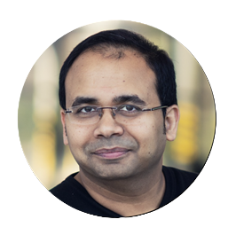
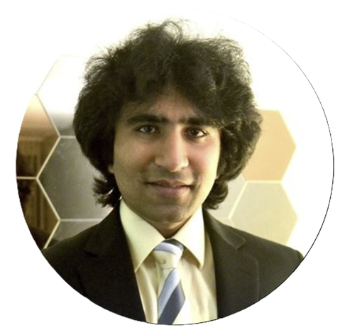

The 4th International Workshop on
High Performance Chiplet and Interconnect Architectures (HiPChips)
Co-located with MICRO 2024 at Austin, Texas, USA
November 2nd, 2024
(Credit: generated by AI Stable Diffusion Model)
 Weifeng Zhang, Lenovo Research
Weifeng Zhang, Lenovo Research
Dr. Weifeng Zhang is a Corporate VP of Lenovo Group and Head of Intelligent Computing & Wireless Research Labs
at Lenovo Research. Prior to joining Lenovo, Weifeng was the Chief Architect and VP of Software at Lightelligence Inc,
a fellow of Alibaba Group and the Chief Scientist of Heterogeneous Computing at Alibaba Cloud Infrastructure.
He was a founding member of the Board of Directors at MLCommons™ (MLPerf™) and currently serves as the Chair of
the AI Co-Design Workgroup at the Open Compute Project Foundation (OCP) and the Program Committee for
the OCP Future Technology Symposiums. Weifeng received his PhD in Computer Science from the University of California, San Diego (UCSD).
 Peipei Zhou, Brown University
Peipei Zhou, Brown University
Peipei Zhou is a Tenure-Track Assistant Professor at Brown University, School of Engineering. She led the ARC (Customized Computer
Architecture Research Center https://github.com/arc-research-lab) Group. She obtained a Ph.D. in Computer Science from the University
of California, Los Angeles in 2019 supervised by Prof. Jason Cong, who leads UCLA VAST(VLSI Architecture, Synthesis and Technology)
Group. Peipei's research interest is in Customized Architecture and Programming Abstraction for Applications including Healthcare,
e.g., Precision Medicine and Artificial Intelligence. She received the 2019 TCAD Donald O. Pederson Best Paper Award in recognition of
the best paper published in the IEEE Transactions on CAD in the two calendar years preceding the award and
the 2023 IGSC Best Viewpoint Paper Nominee, 2018 ICCAD Best Paper Nominee, and 2018 ISPASS Best Paper Nominee.
 Dharmesh Jani, Meta Platforms
Dharmesh Jani, Meta Platforms
Dharmesh Jani (‘DJ’) leads the AI Infrastructure Technology Ecosystem and Partnerships at Meta and has been an
active member of OCP since 2012. He is also co-chair of the OCP Incubation Committee where he started the OCP
strategic initiatives, launched multiple projects such as Sustainability, and is a founding member of the
Board of Directors for UCIe consortium. Prior to Meta, he worked in Fortune 500 companies leading product development
as well as in startups building zero to one businesses. He has a BTech from IIT-Bombay, an MSEE from UCLA,
and an MBA from UC-Berkeley (Haas).
Chester Park, Konkuk University
Dr. Chester Park is a Professor in the Department of Electrical and Electronics Engineering, Konkuk University,
South Korea, where he is currently working on algorithm and architecture co-optimizations using virtual platform
based SoC simulations. Before joining academia, he was with Samsung Electronics, Giheung, South Korea, and
Ericsson Research, CA. He received the Ph.D. degree in electrical engineering from the Korea Advanced Institute
of Science and Technology (KAIST), Daejeon, in 2006.
Prudhvi Nethi, Nvidia
Prudhvi Nethi is an Engineering Manager at NVIDIA, where he leads the development of manufacturing test and diagnostic
solutions for data center products. Previously, he led the product development of data center computing products
from prototype to production at Meta. Before that, he focused on product development and diagnostics for the Intel
Chipset product line at Intel. Prudhvi holds a Master’s degree in Electrical Engineering from Portland State University.
|  |
Dr. Arindam Mallik , Department Director, IMEC Arindam Mallik leads Compute System Architecture (CSA) department at imec. He is a technologist enabling HW-SW co-design at the cross-point of AI algorithms, computer architecture, and novel technology solutions. Arindam has spent the past 20 years pushing the boundaries of technology research to provide novel solutions with a direct impact on the semiconductor industry. He has authored or co-authored more than 100 papers in international journals, conference proceedings, and holds number of relevant patents. He received M.S. and PhD degree in Electrical Engineering and Computer Science from Northwestern University, USA in 2004 and 2008, respectively. |
|  |
Dr. Tushar Krishna ,
Associate Professor, Georgia Institute of Technology Tushar is an Associate Professor in the School of Electrical and Computer Engineering at Georgia Institute of Technology, a visiting professor at MIT, Harvard University and a researcher at Intel. He has a Ph.D. in Electrical Engineering and Computer Science from MIT (2014), a M.S.E from Princeton University (2009), and a B.Tech from the Indian Institute of Technology (IIT) Delhi (2007). His research spans computer architecture, interconnection networks, networks-on-chip (NoC), and AI/ML accelerator systems. He was inducted into the HPCA Hall of Fame (2022) and honored by the “Class of 1940 Course Survey Teaching Effectiveness Award” (2018), the “Roger P. Webb Outstanding Junior Faculty Award” (2021), the “Richard M. Bass/Eta Kappa Nu Outstanding Junior Teacher Award” (2023), and the “Roger P. Webb Outstanding Mid-career Faculty Award” (2024). |
 |
Dr. Vijay Janapa Reddi, Harvard University Associate Professor in John A. Paulson School of Engineering and Applied Sciences at Harvard University, a founding member of MLCommons and serves on the MLCommons™ Board of Directors, and a Co-Chair of MLPerf Inference. Dr. Janapa Reddi is a recipient of multiple honors and awards, including the National Academy of Engineering (NAE) Gilbreth Lecturer Honor (2016), IEEE TCCA Young Computer Architect Award (2016), Intel Early Career Award (2013), Google Faculty Research Awards (2012, 2013, 2015, 2017, 2020), Best Paper at MICRO-2005, Best Paper at HPCA-2009, MICRO and HPCA Hall of Fame (2018 and 2019, respectively), and IEEE’s Top Picks in Computer Architecture awards (2006, 2010, 2011, 2016, 2017). He received a Ph.D. in computer science from Harvard University. |
 |
Dr. Kaisheng Ma, Associate Professor, Tsinghua University Kaisheng is an Associate Professor in Institute for Interdisciplinary Information Sciences (IIIS), Tsinghua University. He received his Ph.D. in Computer Science and Engineering at the Pennsylvania State University. His research focuses on Robust and Efficient AI Algorithms, Post-Moore Architecture, and High-Performance Chips. Dr. Ma has published more than 50 papers on top conferences including NeurIPS, ICCV, AAAI, CVPR, ISCA, ASPLOS, MICRO, HPCA, DAC etc. He has won many awards and honors, including 2024 HPCA Distinguished Artifact Award (1/410), 2022 CCF Integrated Circuit Early Career Award, 2020 Springer Nature Research Highlights from China Collection Award, 2017 ASP-DAC Best Paper Award, 2016 IEEE MICRO Top Picks, 2015 HPCA Best Paper Award, etc. |
|
Durgesh Srivastava, CTO, MIPS Durgesh is the CTO at MIPS. Before MIPS, he held the Senior Director / Data Center Product Architect at Nvidia and various tech/management positions at Intel. he is an alumnus of IIT Kanpur and Hong Kong University of Science and Technology. |
|

|
Dr. Bapi Vinnakota, Program Manager, NIST Bapi Vinnakota is a program manager with the NAPMP in CHIPS R&D Office in NIST. Prior to joining NIST, he started and led the Open Domain-Specific Architecture sub-project, within the Open Compute Project to create and establish chiplet economy. He also participated in the Manufacturing Roadmap for Heterogeneous Integration and Electronic Packaging, a roadmap effort sponsored by NIST and led by Prof. Subu Iyer at UCLA and SEMI. Bapi received his Ph.D. from Princeton University. |
|
Dr. Jiaqi Gu, Assistant Professor, Arizona State University Jiaqi is an Assistant Professor of the School of Electrical, Computer and Energy Engineering at Arizona State University. He received his B.E. degree from Fudan University in 2018, and the Ph.D. degree in Electrical and Computer Engineering from The University of Texas at Austin in 2023. His research interests include emerging technology for next-generation AI computing systems, hardware-algorithm co-design, AI/ML for hardware design, and electronic-photonic design automation. |
|
|
Dr. Fitzgerald Sungkyung Park, Professor, Pusan National University Fitzgerald Sungkyung Park took his Ph.D. degree in electronics engineering from Seoul National University, Korea. He worked for Samsung Electronics, Electronics and Telecommunications Research Institute (ETRI), and Ericsson, Inc., USA, where he developed circuits for various transceivers. After joining Pusan National University, his research interests include design and modeling of SoC, hardware accelerators, and virtual platforms for neural networks and 6G. |
|
|
Dr. Srikant Bharadwaj, Sr. Researcher, Microsoft Srikant Bharadwaj is a Senior Researcher at Microsoft working on hardware-software co-design for machine learning and high-performance computing applications in the Systems Innovation Group. Srikant received his Master’s and PhD degree in Electrical and Computer Engineering from Georgia Institute of Technology. Before joining Microsoft, Srikant worked as a Senior Researcher at AMD Research for about 4.5 years. |
|
|
Venkat Ramesh, Prroduction System, Meta Venkat Ramesh is a Production Systems Engineer working in Meta's Infrastructure Org. Venkat leads various initiatives on diagnostics development, telemetry gathering and performance for AI silicon, systems and training clusters. In his past life, he worked on telemetry software, as well as performance engineering teams at a couple of Flash vendors. |
|
|
Lihong Cao, Sr. Director, ASE Group Lihong Cao is a senior director of engineering/technical marketing at ASE US Inc. She has comprehensive experience driving new product and advanced packaging technology development, new product introduction, quality and reliability, Fab/OSATs processes and root cause analysis. Responsible for advanced packaging architecture, chiplets interconnect, advanced packaging technology development (2.5D/3D, FOCoS, Embedded Bridge, SIP, SiPh) for Chiplets and Heterogeneous Integration, Technology promotion, Strategic planning and Business engagement. She leads chiplets Die to Die interconnect standardization effort in UCIe (Universal Chiplets Interconnect Express) consortium as Board of Director of ASE. |
The AT&T Hotel and Conference Center
Austin, Texas, USA
November 2nd, 2024, 9:00am - 5:00pm CT
HiPChips Conference is colocated with MICRO 2024
The 57th IEEE/ACM International Symposium on Microarchitecture®
Austin Texas, USA